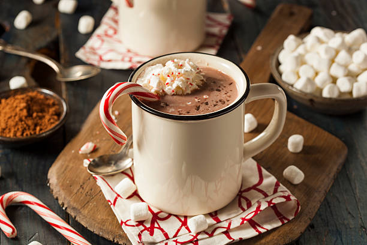
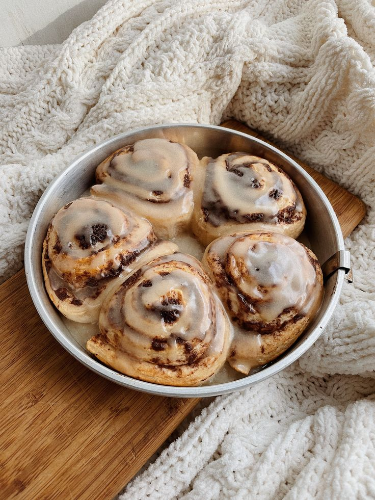
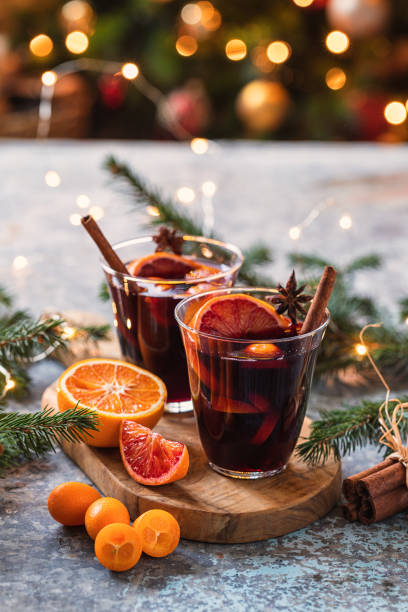
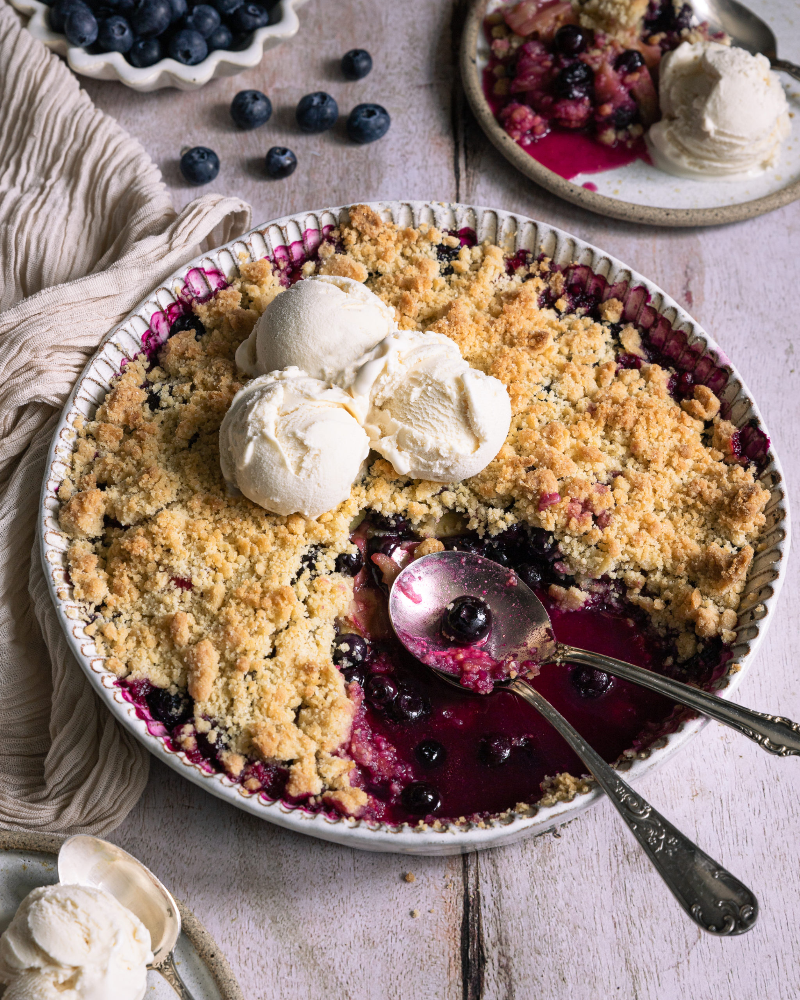

Recettes d'hiver
Chocolat Chaud

Ingrédients
- 500ml de lait
- 100g de chocolat noir
- 1 c.c. cacao en poudre
- 1 c.s. sucre roux
- 1 pincée de cannelle
- 1 pincée de sel
- Chantilly et guimauves
Préparation
- Faire chauffer le lait à feu doux avec le sucre, la cannelle et le sel.
- Ajouter le chocolat en morceaux et fouetter doucement jusqu’à ce qu’il soit fondu.
- Verser dans deux grandes tasses, ajouter chantilly et guimauves.
- Saupoudrer un peu de cacao ou de copeaux de chocolat.
- Bonus : ajouter une pointe d’extrait de vanille.
Cinnamon Rolls

Ingrédients pâte
- 250g de farine
- 40g de sucre
- 1 sachet de levure
- 120ml de lait tiède
- 40g de beurre
- 1 œuf
Garniture
- 40g de beurre mou
- 50g de sucre roux
- 1 c.s. de cannelle
Glaçage
- 50g de sucre glace
- 1 c.s. de lait
- 1/2 c.c. d’extrait de vanille
Préparation
- Mélanger les ingrédients de la pâte, pétrir 5–10 min puis laisser reposer 1h.
- Étaler, tartiner le beurre, saupoudrer sucre + cannelle.
- Rouler, découper, déposer dans un moule.
- Laisser lever 30 min, cuire à 180°C pendant 20–25 min.
- Verser le glaçage sur le dessus.
- Bonus : ajouter du zeste d’orange.
Vin chaud aux épices

Ingrédients (4 verres)
- 1 bouteille de vin rouge
- 1 orange en rondelles
- 1 bâton de cannelle
- 3 clous de girofle
- 2 étoiles de badiane
- 3 c.s. de miel ou sucre roux
- (Optionnel : une pointe de rhum ambré ou jus d’orange)
Préparation
- Verser le vin dans une casserole avec tous les ingrédients.
- Faire chauffer à feu doux (sans bouillir) 15 à 20 minutes.
- Laisser infuser 5 minutes, filtrer et servir.
- Bonus : ajouter vanille ou gingembre frais.
Crumble d'hiver poire, myrtille et cannelle

Ingrédients pâte
- 100g de farine
- 60g de beurre
- 50g de sucre roux
- 1 pincée de sel
Garniture
- 3 poires mûres
- 150g de myrtilles
- 1 c.s. de miel
- 1 c.c. de cannelle
Préparation
- Préchauffer le four à 180°C.
- Mélanger poires + myrtilles + miel + cannelle, mettre dans un plat.
- Mélanger farine + sucre + beurre du bout des doigts (texture sableuse).
- Saupoudrer sur les fruits et cuire 25–30 min.
- Bonus : servir tiède avec glace vanille.